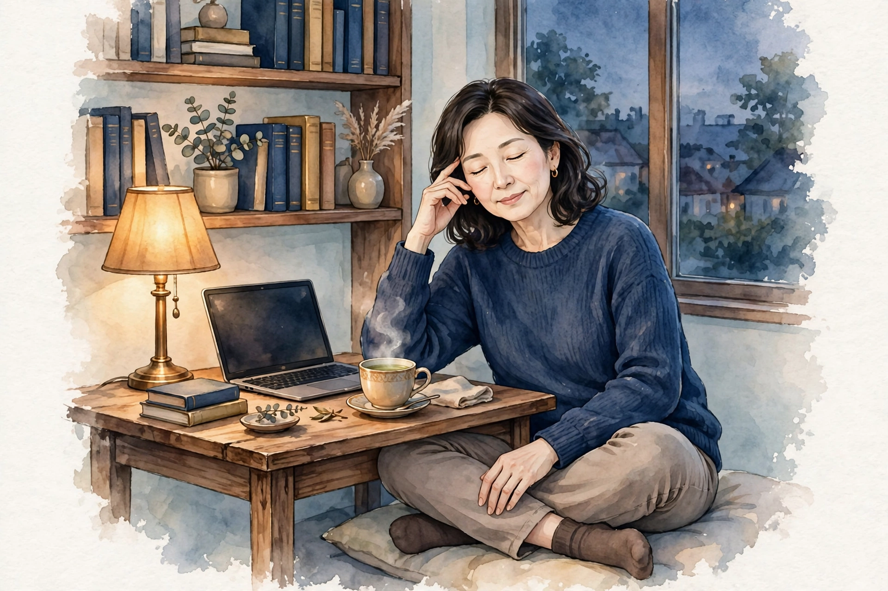

梅田で50代に気になる目の疲れ感｜年代と画面時間の見直しとセルフケア、受診の目安ハウツー

梅田で働く・暮らす50代の方へ。仕事や家事の合間に画面や細かい文字を見る時間が重なった夕方に「目がしょぼしょぼして、ピントが合いにくい気がする」「目の奥が重く、夕方になると文字が追いづらい」「40代の頃より目の疲れ感が残りやすい気がする」と感じる目の疲れ感について、一般的な解説と考えられる要因の整理、年代と画面時間の見直しとセルフケア、医療機関への受診の目安をまとめました。一般的な健康情報としてお読みください。
#梅田 50代 目の疲れ#50代 目の疲れ感 画面時間#目の疲れ セルフケア 50代#梅田 女性専用 サロン 目 50代#50代 女性 目もと ケア
50代に気になる目の疲れ感とは（一般的な解説）
目の疲れ感とは、病名ではなく、「目がしょぼしょぼしてピントが合いにくい気がする」「目の奥が重く感じる」「夕方になると細かい文字が追いづらい」と感じる感覚を表す言葉として使われることがあります。50代では、仕事の資料やスマートフォンの文字を読む場面で気になり始める、夕方になると目もとの重さを自覚する、朝は気にならなくても一日の終わりに残る、といった形で感じる方が多いとされます。「40代の頃は一晩眠れば気にならなかったのに、最近は翌朝まで重さが残る気がする」「近くの文字を読むときに、つい目から離して持つようになった」と感じる変化を口にする方もいます。梅田では、通勤の電車や地下街の案内表示など、遠くと近くを切り替えて見る場面も多く、そうした日常の中で目の使い方を意識する方もいます。感じ方には個人差が大きく、その日の画面時間や眠りの様子によっても変わるとされます。
大切なのは、「以前の自分と比べてどうか」「どんな日に気になりやすいか」という視点です。画面に向かった時間が長かった日なのか、細かい文字を読む作業が重なった日なのか、遠くと近くの切り替えが多い日だったのか、眠りが浅かった日の翌日なのか——気になりやすい場面を簡単に記録しておくと、自分の傾向がつかみやすくなります。この記事では、50代に気になる目の疲れ感の一般的な解説と、背景として考えられる要因の整理からお伝えします。なお、目の疲れ感の感じ方だけで体の状態を判断することはできません。気になる変化が続く場合は、後半の「受診の目安」もあわせてご確認ください。
考えられる要因の整理
1つ目は、年代とともに自覚しやすくなる、ピント合わせの感じ方の変化です。年齢を重ねると、近くの文字にピントを合わせる働きの感じ方が、若い頃とは少しずつ変わってきたと感じる方がいるとされます。近くの文字を読むときに目から離して持つ、遠くを見たあとに近くの文字へピントが合うまで少し時間がかかる気がする、といった変化は、この年代で口にする方が少なくありません。その分、同じ時間の読書や画面作業でも目まわりの緊張が続きやすくなり、夕方に重さを自覚しやすい方がいると考えられます。ただし、感じ方には個人差があり、「年のせい」と一言で決めつけられるものではありません。
2つ目は、画面時間の積み重ねと、目の使い方です。50代は、仕事で資料や画面を見る時間が長い方も多く、家事や家族の連絡でスマートフォンを見る時間も重なりがちな世代とされます。画面に集中しているとまばたきの回数が減りやすいとされ、目の表面の乾きを感じやすくなることがあります。細かい文字を追うときは、無意識に顔を画面へ近づけたり、眉間に力が入ったりすることもあり、目まわりだけでなく、首・肩まわりのこわばりとセットで自覚する方もいます。画面の明るさや文字の大きさ、画面までの距離といった環境も、目の使い方の背景として挙げられます。ただし、感じ方には個人差があり、「画面が原因」と決めつけられるものではありません。
3つ目は、睡眠や乾燥、この年代の体のゆらぎとの関わりです。眠りが浅い日や夜中に目が覚める日が重なると、翌日に目の重さを感じやすいことがあるとされます。ほてり感など日によって波のある不調感を抱える方もいる世代であり、そうしたコンディションの波と一緒に目もとが気になる、という方もいます。エアコンの風や室内の乾燥も、目の表面の乾きの背景として挙げられることがあります。東洋医学では、目は肝経と関わりが深い部位と捉えられてきた歴史があり、目の内側は背中を広く巡る膀胱経のはじまりとも重ねて考えられてきました。要因はひとつではなく、その日の画面時間や眠りの様子、季節によって組み合わせが変わるため、思い当たるものをひとつずつ見直すことが大切です。
年代と画面時間の見直しとセルフケア
まずは「画面時間を区切り、遠くを見る時間をはさむ」ことです。画面に向かう時間が続いたら、一度目を離して窓の外など遠くをぼんやり眺める区切りを作る、文字の大きさや画面の明るさを見やすい設定に見直す、画面までの距離を少し離す、といった工夫は、日常の中で取り入れやすい方法です。読書や手元の作業が続く日も、途中で顔を上げて遠くを見る区切りをはさむことが挙げられます。近くの文字を読むための眼鏡を使い分けている方は、作業に合った度数かどうかを、眼科や眼鏡店で相談することも選択肢のひとつです。
次に「目もとを温めて、休める」ことです。蒸しタオルを閉じた目もとに当てる、帰宅後の入浴で首・肩まで湯船につかる、といった方法は、冷えや乾きでこわばった目もとをいたわる基本とされます。意識してゆっくりまばたきを繰り返す、目を閉じて数分休む、といった小さな休み方も、仕事や家事の合間に取り入れやすいものです。蒸しタオルを使う際は、やけどに十分注意し、心地よい温度で行ってください。目を強く押したり、こすったりする必要はありません。あわせて、目まわりのこわばりと一緒に感じやすい首・肩まわりを、ゆっくり回したり温めたりすることも挙げられます。
あわせて、眠る前の画面時間を区切ること、寝室や仕事場の乾燥が気になる場合に加湿やエアコンの風向きを調整すること、就寝時刻を大きくずらさないことも、日常の体調管理の基本とされます。ただし、セルフケアはあくまで日常の疲れ感への対処です。特定の方法に頼りすぎたり、気になる状態を我慢して様子を見続けたりしないようにしてください。重さが強い日は、ケアよりもまず目と体を休めることを優先することも大切です。
受診の目安｜こんなときは医療機関へ
50代の目の疲れ感の多くは、ピント合わせの感じ方の変化や画面時間、睡眠や乾燥といった日常の要素が重なって感じられるとされますが、中には医療機関での確認を優先したいサインもあります。「見え方が急に変わった、視野の一部が欠ける、光が走る感じがする」「目を開けられないほど強い痛みがある、痛みが少しずつ強くなっている」「片目だけ強い充血がある、目やにが大量に出る」「まぶたが腫れて開けにくい状態が続く」「頭痛や吐き気、めまいを伴う」「休んでも重さや見えにくさが続く日が増えてきた」「近くの文字の見えにくさが進んできた気がする」といった場合は、セルフケアで様子を見続けず、眼科など医療機関への受診をおすすめします。
また、目の疲れ感の背景には、視力や目の表面の状態、眼鏡の度数など、検査で初めて分かる要素が関係していることもあるため、気になる状態が続く場合は一度相談してみてください。当店のケアはリラクゼーションを目的としたボディケアで、目の状態や病気を診断したり、それらに対応したりするものではありません。医療機関での確認を優先したうえで、日常のコンディションを整える選択肢のひとつとしてご利用ください。
当店でのケアとサロンのご案内
ステラポラリスは、大阪・梅田エリアのレンタルサロンで施術する女性専用・完全予約制のサロンです。営業は月〜土17:00〜22:00（日曜休み）で、仕事帰りや家事を終えたあとの時間帯にも合わせやすい設定です。施術はオイルマッサージと美容整体、料金は90分10,000円です。ご予約はLINE公式アカウント「ポラリス美容整体院」で受付中です。場所は大阪市北区堂山町12-5 ロイヤルハイツ梅田Ⅱ 303号室（レンタルサロンACE内）、中崎町駅から徒歩5分・阪急梅田駅から徒歩8分です。入室方法の詳細はご予約確定後にLINEでご案内します。
施術では、その日の体調や気になる部位をうかがい、頭部や目まわりだけでなく、その土台となる首・肩・肩甲骨まわりや背中までを順にほぐしながら、巡りを意識したケアを組み立てます。目もとは繊細な部位のため、圧の強さはお好みに合わせて調整しますので、遠慮なくお伝えください。担当は施術歴30年・鍼灸師資格を持つセラピスト1名で、当店では鍼灸施術は行いません。関連するお悩みページ「目の疲れ感」「眠りの浅さ」や、経絡ページ「肝経」「膀胱経」でも、体の見方やケアの考え方を紹介していますので、あわせてご覧ください。料金や営業時間の詳細は、メニュー・料金ページでもご確認いただけます。